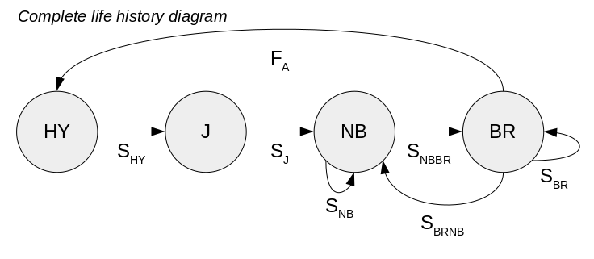

Today you are going to learn to estimate growth rate from age-structured
or stage-structured population models. We will use matrix algebra
techniques to isolate the demographic rates (which determine the growth
rate of the population) from the abundances of organisms in each age or
stage, and then analyze the behavior of the population based on these
components individually, and based on their interactions.
Demographic monitoring is considered the state of the art in population monitoring, because it is highly informative. From a population model it's possible to not only calculate a growth rate from a set of demographic rates, it's possible to evaluate how important each demographic rate is to the growth rate of the population. It's possible to see how much a demographic rate would need to be increased to turn a declining population into a stable one. It's possible to calculate what the stable age distribution for the population would be, and to compare this to the age distribution in the population at the moment. And, it's possible to project how a population would be expected to change under different scenarios (for example, how would the population respond if an oil spill caused a complete reproductive failure for one year?).
We are going to work with a stage-structured population model for ravens in the Mojave. This will be a matrix version of the life table model we did last time, except for a couple of new wrinkles. First, real raven populations aren't made up just of breeders and youngsters that aren't ready to breed yet. Non-breeding adults are also present in the population, and non-breeders can become breeders when they obtain a mate and find a suitable territory. Second, ravens nest in a variety of locations, from roofs of buildings in the middle of a town to Joshua trees out in the middle of the desert. Ravens in town have access to stable nesting substrates, water, and abundant food. They have higher survival rates and higher reproductive rates than ravens that nest out in the desert, who lack easy access to food, trash, and road-killed carrion for food.
Ravens can't be aged, but it is possible to tell hatch year birds from juveniles, and juveniles from adults. Hatch year ravens have pink mouth linings
Juveniles have brown feathers in the wings and tail, instead of glossy black like adults have. The mouth linings of juveniles is also pink, often through the second year of life. The iris of the eye is also completely brown in adults, but is gray in fledglings, and transitions from gray to brown over the first two years of life.
The stages we will recognize for this model are thus hatch year, juvenile, non-breeding adult, and breeding adult. A diagram of this life history looks like this:

Hatch year ravens survive to become adults with a probability of SHY. Juveniles survive to enter the non-breeding adult population with a probability of SJ. Non-breeding ravens survive and either remain non-breeders (with a probability of SNB), or transition into the breeding pool (with a probability of SNBBR). Breeding ravens survive and either remain in the breeding population (with a probability of SBR), or survive but lose their territories to become non-breeders again (with a probability of SBRNB). Finally, breeding ravens produce hatch-year ravens, with a fecundity per breeding female of FA.
We will start with parameters for the "urban" ravens (those that are living in a human-developed area). The matrix of fecundities and survival probabilities for this population are:
|
Fecundities are in the first row (which are 0 for all bet the breeding adults). Off-diagonal survival probabilities indicate survival and transition into another age class - all HY birds that survive become juveniles, so the probability 0.4 is below the main diagonal, where HY aligns with J. Likewise, all juveniles enter the non-breeding population first. Once ravens are in the non-breeding adult population, though, they can either survive and remain non-breeders, or survive and become breeders. The probability of surviving is 0.8, split between surviving and staying remaining a non-breeder (0.7) and surviving and becoming a breeder (0.1). Similarly, the breeding ravens can survive and remain breeders (0.86), or survive and become non-breeders (0.1), with a total survival probability of 0.96. |
||||||||||||||||||||||||||||||
If you download this file, you'll see that this matrix is in the first worksheet, Urban. We will estimate the growth rate and stable age distribution for the urban population first.
The next thing we will do is to project the population into the future with Excel.
1. Set up a worksheet for projecting the population. Switch to a new, blank worksheet in Excel.
Switch to R and type:
lambda
and the growth rate will be written to the screen. Copy and paste this growth rate into cell F1 in Excel, and label it "Lambda" in E1.
Switch back to R, and type:
data.frame(stable = stable)
Copy/paste this stable age distribution to cells H2:H5, then type "Stable age" into cell H1. You may need to do a "text to columns" to get rid of the row numbers, then put the proportions into H2:H5.
In cell I1 type "Starting pop", and in cell I2 type =round(100*h2,0). Copy and paste this to H3:H5. This will be the starting population, which is at stable age distribution aside from a little rounding error.
You can open the csv file with the demographic matrix with Excel, and copy/paste the matrix of demographic rates into your worksheet, in cells B4:E7.
2. Project one year. Type the names of the age classes into cells A12 through A15. In cell B11 type "Year 1". Select cells B12 through B15, then type:
=mmult(b4:e7, i2:i5)
and hit CTRL+SHIFT+ENTER to make this an array formula. The result of matrix-multiplying the demographic rates by the initial population size should be in cells B12-B15.
You'll see that even though we have a growth rate over 1 we still had a slight decline in numbers for yearlings - this is due to rounding error in the initial population sizes, nothing to worry about.
3. Project to year 10. You can extend your Year 1 label to the right to get Year 2 through Year 10.
Next, select cells C12 through C15, and type:
=mmult($b$5:$e$8, b12:b15)
and CTRL+SHIFT+ENTER. This time you multiplied the demographic rates by the population at time 1 to get time 2.
Using dollar signs to identify the matrix of demographic rates makes this copy and paste-able. Copy the cells in C12:C15, and paste to D12 to D15, then continue to past until you get to Year 10 in column K. You have not projected the population ten years.
You can calculate the total population size in row 17 - label A17 "Total N", and then sum the populations in cells 12 through 15 in each of the columns for years 1 through 10 (that is, in cell B17 type =sum(b12:b15), then copy/paste this to the rest of the columns).
4. Plot population growth. Select cells A11 through K15, and plot a line graph with year on the x-axis and population size on the y-axis. You should have a line for each age. Copy the graph and paste it to a Word file, and label it "Growth from stable age".
5. Confirm that Nt+1/Nt estimates growth rate. In cell I19 type "Lambda", and in cell J10 type =k17/j17. This should divide the projected population size in year 10 by the population size in year 9, and it should be very close to the lambda we calculated in R, in cell F1.
The starting population size does not dictate the intrinsic growth rate, but if the population is not at stable age distribution then the population may do some unexpected things. For example, the growth rate indicates that we should see a 2% increase in population size each year, but if we have some sort of accident that removes all of the animals in one of the age classes, will this still occur? We can assess this easily by just setting the initial numbers in each age class to 0 one at a time, and seeing how the population growth changes.
1. Change the starting population for yearlings to 0. Make this change to the starting population in cell I2, not the first year population size calculated in B12.
This simulates a complete reproductive failure for one year (perhaps due to an outbreak of disease). Since the spreadsheet is made up of formulas, you will see the graph update immediately. Copy the graph and paste it to a Word file, and label it "Growth from yearlings = 0". Make sure to look at the numbers as well as the graph, the changes in the yearling age class are subtle compared to the other classes, and don't show up well on the graphs. Pay attention to which age class is most affected - the yearlings only spend one year as yearlings and then grow into juveniles, so there's no effect on the number of yearlings in the first year. The lower than normal number of yearlings affects the number of juveniles most, and at later years this propagates into the mature adults and finally into the non-breeders. It isn't until there is an effect on the mature adults that number of yearlings is affected at all, and it's a pretty minor change.
Put the number of yearlings back to 4.
2. Change the number of juveniles to 0. Make this change in cell I3. You'll see that this change is much more serious, and affects all of the age classes. Since the primary source of juveniles is juveniles that survived from the previous year, a loss of all the juveniles one year causes the juvenile age class to drop to low levels, and it doesn't recover to initial numbers over ten years. Because the juveniles age into breeding adults, losing the juvies causes a deficit of breeding adults as well, since 7.36% of juveniles age into breeding adults each year. Thus, even though the population growth rate unaffected (it's still 1.025), the number of breeding adults actually declines for awhile until the number of juveniles increases enough to offset loss of adults to mortality. When you reduce the number of breeding adults you reduce the number of yearlings slightly as well, so you'll see a small decrease in the number of yearlings that parallels the reduction in breeders. The effect on post-reproductives is the smallest, in that they never decline but the rate of increase is slowed slightly. Copy and paste the graph to your Word file, and label it "Growth from juveniles = 0".
Set the number of juvies back to 32.
3. Change the number of mature breeders to 0. Make this change in cell I4. Losing all the breeding adults impacts all of the other age classes noticeably. The yearlings decline because juveniles only rarely breed, and to need time to mature to adults to replace those that were lost. The juveniles decline because the supply of yearlings is reduced, and there are fewer new juveniles in the population each year to balance loss to mortality and aging into breeding adults. The post-reproductives decline because there are many fewer adults available to age into that class, and losses outweigh additions to that class for awhile. Copy and paste the graph to your Word file, and label it "Growth from breeders = 0". Set the breeders back to 32.
4. Change the number of postreproductives to 0. Make this change in cell I5. You'll see that this affects the number of postreproductives, but has no effect on any other class because they don't age to other classes, and they don't breed. Copy and paste the graph to your Word file, and label it "Growth from postreproductives = 0".
We're going to do one more model so that we learn how to use the Solver in Excel to evaluate management alternatives to improve the growth rates of a species. The killer whale data was interesting in that it included non-reproductive females, but the growth rate for that population was already over 1, and the population evidently didn't require any intervention to persist. We'll focus on a model for the Spotted Owl now because the population has a growth rate less than 1, which will allow us to consider what we might do to stabilize the population.
Each of the demographic rates results from different processes operating on different stages of the life history. Breeding adults have territories they defend from other Spotted Owls, which gives them a familiar space in which to find food and other resources they need to survive and reproduce. Survival for adults is probably in part determined by food, but is also determined by predation risk from other, larger raptors. Adult reproduction is likely to be limited by food resources and by predation, but nest predators can be very different animals than predators of adults (tree squirrels are major nest predators, but they're not known to hunt and kill adult Spotted Owls). In contrast, yearlings have no territory, and are young and inexperienced, which makes them more susceptible to predation and starvation. Juveniles don't have territories, but have gained experience which helps them survive. Both yearlings and juveniles spend time moving around the landscape looking for food, and juveniles begin to look for territories of their own - breaking up the forest with logging ("habitat fragmentation") can make this search more difficult and more hazardous.
Now, we have already explored how different parameters affect growth rate to different extents, but we need to consider the management implications of this finding. Given that different parameters have different effects, what should we do next? It's tempting to say that we should put our effort into improving the demographic rate that gives us the biggest "bang for our buck", which would mean trying to improve the rate with the biggest elasticity. The elasticities for the owl matrix are: fecundity = 0.02, yearling survival = 0.02, juvenile survival = 0.02, adult survival = 0.94. This suggests strongly that adult survival is the rate we want to improve. But, as we discussed in lecture, Spotted Owl adult survival is primarily determined by the amount of old growth habitat in the territory. Old growth Douglas fir forests are those that are over 200 years old, so if we wanted to make more old growth to improve adult survival we would have to wait awhile to see any positive effect. Fecundity has a very low elasticity compared to adult survival, but it's primarily related to the availability of woodrats to foraging adult owls, which can be manipulated much more easily by creating some early-successional habitat for the woodrats in areas where foraging adult owls can get them. Thus, there may be some real-world constraints on what we're capable of doing that will dictate what we are able to do.
So, what you will do next is to see how much improvement is needed in each of the Spotted Owl demographic rates so we can evaluate how feasible it is to stabilize the population with the management options available to us.
The matrix model for the Northern Spotted Owl (from Noon and Biles, 1990) is here:
| From: | |||
| To: | Yearlings | Juveniles | Adults |
| Yearlings | 0 | 0 | 0.24 |
| Juveniles | 0.11 | 0 | 0 |
| Adults | 0 | 0.71 | 0.942 |
1. Copy and paste this matrix to a fresh, blank worksheet in your Excel spreadsheet. Use cells B3 through D5. For the rest of the instructions to work, the upper-left 0 (from Yearlings to Yearlings) should be in cell B3.
2. Calculate growth rate. Excel doesn't have eigenanalysis functions, so we'll use the Solver to find the growth rate.
If you recall from lecture we can derive the "characteristic equation" for a matrix by solving this equation:
det(L - λI) = 0
We did this algebraically when we only had two age classes, but it gets a little more complex with three or more age classes, so we'll use a simpler numerical approach using the Solver. To do this, first we'll calculate the L - λI using an initial guess for the value of λ, then we'll take the determinant (which will be a single number) using Excel's mdeterm() function. We'll then have Solver vary λ until the determinant is equal to 0, and the lambda that makes the determinant equal zero is our growth rate.
In cell F1 type "Lambda", and in G1 type 1 as the initial guess for λ.
If you recall, λI is just a matrix with λ along the main diagonal, and 0's everywhere else. In cell B7 type the formula =$g$1, which will place the value of λ into g1. Now, copy that and paste it to C8 and D9 so that λ is repeated along the diagonal.
Next, copy one of the zeros out of the demographic rates matrix, and select cells B7 though D9. Do a "Paste special", and select "Add" as the operation. This will place zeros in all the blank cells to complete the λI matrix.
Next, in cell B11 type =b3-b7. This will subtract the first element of the λI matrix from the first element of the demographic rates matrix. Copy and paste this to the rest of cells B11:D13. This is now the L-λI matrix.
In cell B15 type "Determinant of (L-lambda I)". In cell B16 type =mdeterm(b11:d13), and hit CTRL+SHIFT+ENTER. You now have the determinant of L-λI, and we just need to find a value of λ that makes this equal 0 to get our growth rate.
Start up the Solver, and set B16 to the value of 0 by changing the growth rate in G1. You can leave the "Make unconstrained variables non-negative" box checked so that λ will be forced to take a positive value, and click "Solve". Bear in mind that there are three eigenvalues for this matrix, and there may be more than one positive one - we're interested in the largest one, so when you're finding growth rates this way it's a good idea to start with a growth rate that's likely to be higher than the actual growth rate so that Solver can find the eigenvalue that's the largest.
When Solver finishes, you'll see that the Northern Spotted Owl has a growth rate of 0.962, which means it's declining by about 3.8% per year (this is one of the primary reasons it's a threatened species). Let's see if we can fix this for them.
3. Find how much improvement in each demographic rate would be needed to stabilize the population. A stable population has a λ of 1, so for this step we will use Solver again, but this time we will manually set lambda to 1 and then have Solver change one of the demographic rates until the determinant is 0 again. The new value of the demographic rate will then be what is needed to stabilize the population, if all the other rates remain the same.
For convenience, make a copy of the actual demographic rates and paste them to cells A20:D24 (label cell A19 "Actual rates").
Set λ to 1 type typing 1 into G1.
Let's start with fecundity. Start Solver, and have it set the determinant in cell B16 to zero by changing the adult fecundity in cell D3.
In cell F19 write "Needed rates", and in cell F21 write "Fecundity". In cell G21 copy and paste the fecundity in D3 that is needed to make growth rate 1. Now, copy the actual fecundity from cell D22 and paste it to cell D3 so that you can try another rate.
Now, find the yearling survival rate needed to stabilize growth. Set the determinant to 0 by changing cell B4. Label cell F22 "Yearling survival", and copy/paste the survival rate to cell G22. Copy/paste the actual yearling survival from cell B23 to B4.
Now, find the juvenile survival needed to stabilize growth. Set the determinant to 0 by changing cell C5. Record the result (call this "Juvenile survival"), and then re-set the value back to the actual survival rate.
Finally, find the adult survival needed to stabilize the population. Call this "Adult survival".
That's it! Save your worksheet for your report.